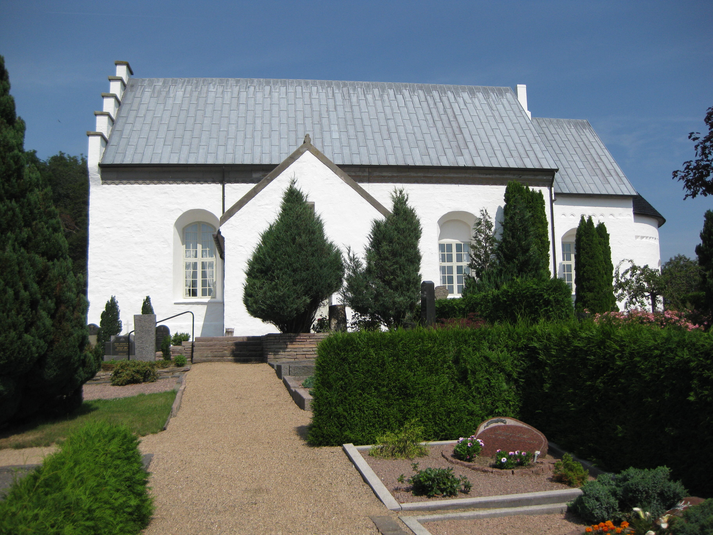
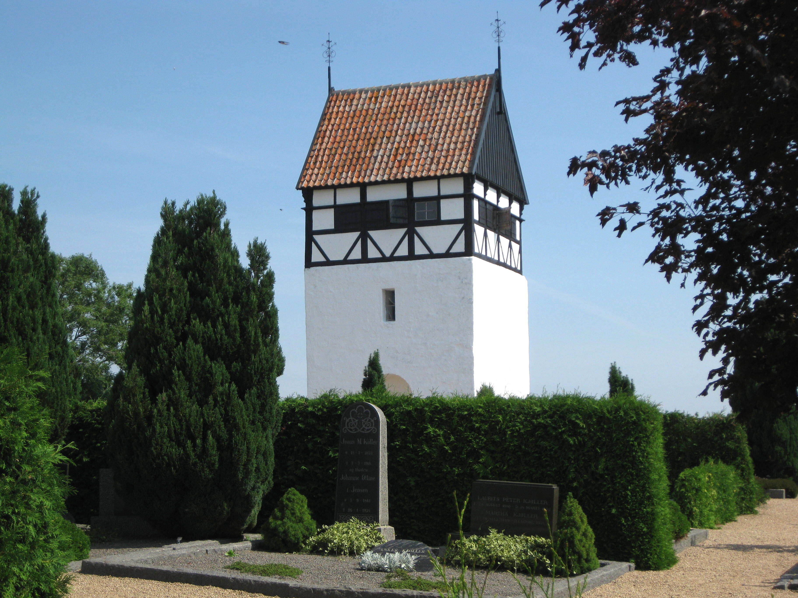
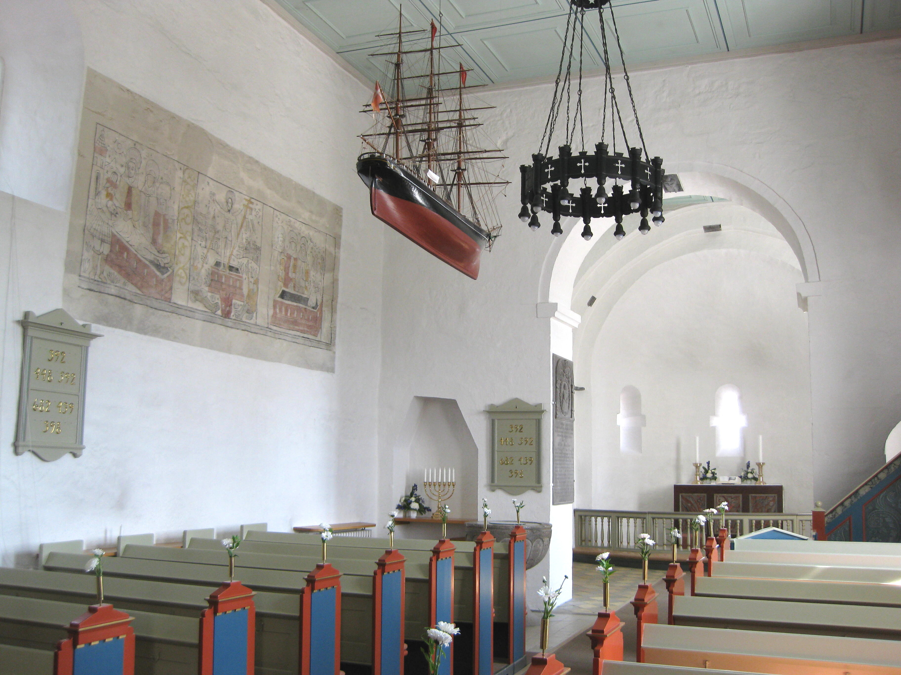
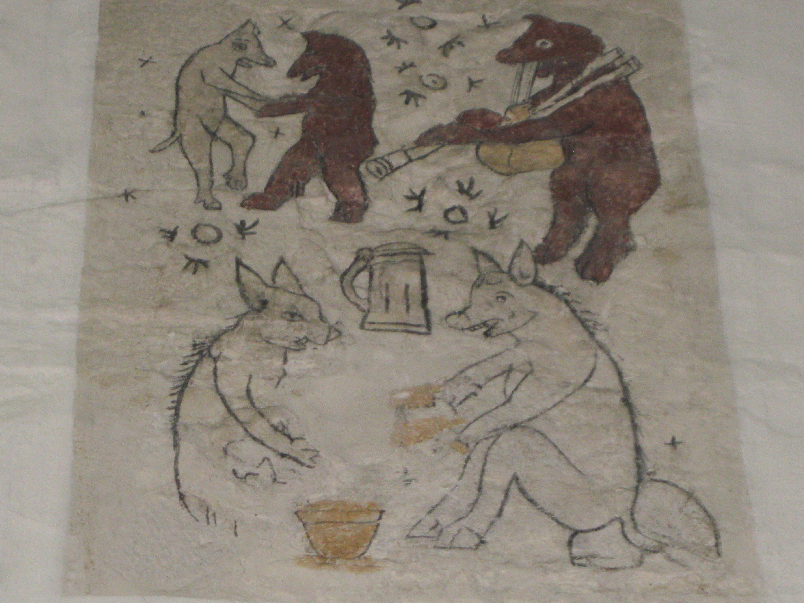

Why Bornholm?
Bornholm is a peaceful, bucolic island in the Baltic Sea. It is a major summer vacation destination for Danes, as well as Germans and Swedes. It is famous for its smoked herring, its sandy beaches, and its excellent biking. Moreover, the island has a robust hotel and rental housing infrastructure to accommodate visitors.
Christina has connections to Bornholm and the town of Snogebæk on both sides of her family. Her father, Christian, was raised there after her paternal grandparents (farfar og farmor) moved to the island when he was two years old. Meanwhile, Christina’s maternal grandmother (mormor) and her relatives are native to Snogebæk. Christina’s mother, Katarina, was actually born on Bornholm and visited many times in her youth. The town is where Christina’s parents first met, and has been a perennial family vacation destination.
While John has no familial connections to Bornholm, he has had the pleasure of visiting many times over the past few years, each time staying in Snogebæk with Christina’s farmor and farfar. He has deeply enjoyed the (usually) wonderful weather, the sandy beaches, the idyllic countryside, the great bike riding, and, of course, the plentiful smoked fish. John and Christina hope that first-time visitors will find equal pleasure in Bornholm.
Sankt Povls Kirke
St. Paul’s Church · also known as Poulsker Kirke
St. Paul’s Church is a Danish Lutheran church just outside Snogebæk. One of the youngest Romanesque churches on the island, it was built in 1248. While neither John nor Christina are practicing Lutherans, the Danish church plays an enormous role in marking cultural milestones in Danes’ lives through baptisms, confirmations, marriages, and funerals. St. Paul’s Church has intersected with Christina’s family in the past, as the location for her uncles’ baptisms and her father and uncles’ confirmations, as well as playing an important role in the lives of many of her ancestors on her mother’s side. John and Christina hope you get to enjoy this beautiful building, its historic (and somewhat silly) 16th-century artwork, and its view of the surrounding countryside.




Folkets Hus
“The People’s House”
After the ceremony at St. Paul’s Church, we will have a dinner and party at the local public event space, known as “The People’s House.” It sits along Snogebæk’s main street, directly opposite the docks.
Danish Wedding Traditions
In some ways, Danish weddings are very similar to American ones. However, there are a couple of ways in which they differ that we want to point out ahead of time so everyone can fully participate.
Church
The ceremony will be conducted primarily in Danish and is expected to last about an hour. There will be several folk hymns you are welcome to sing along to. Afterward, people either throw rice or blow bubbles at the couple as they exit the church.
Speeches
It is customary to have a few pre-planned speeches. In Denmark, anyone who wants to give a small speech or toast is welcome to do so throughout dinner — Danes will even write new lyrics to popular songs for everyone to sing along to. If you’d like to say a few words, approach the designated Toast Master at the start of dinner. We invite speeches in both Danish and English.
Dancing
While any good wedding includes dancing, the Danes like to go hard. Be prepared to boogie well into the evening. If you get hungry, there will be reinforcements at midnight. Drinks shall flow unburdened throughout.
Gifts & Registry
There is no registry for this wedding, and John and Christina are not expecting gifts. Your attendance is all that is desired. If you insist on giving the couple a gift, they would appreciate if you mailed any gifts, cash, or checks to their Boston address. Please do not travel with gifts to Bornholm, as this will cause difficulties when John and Christina must travel home to the US. Virtual cash transfer is also possible. Please contact Christina or John for more information.